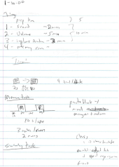
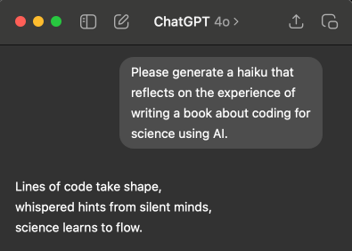

3 Essential tools and concepts
3.1 The tools and why we use them
I hope that the principles and strategies outlined in this book will transcend any particular software platform or programming language, but for the purposes of explication I will focus on a particular language (Python) and a particular set of tools for software development/engineering and AI coding assistance. Here I briefly outline the motivation for these particular tools and introduce some important concepts to help understand them.
3.2 Why Python?
For the coding examples in this book I will use the Python programming language. I have chosen Python first and foremost because it is a language that I know well, as well as being one of the most popular languages today in science. Python is a relatively high level programming language, which means that it can be understandable (if written correctly) even by someone with relatively little experience. It is also free and open source, which means that anyone with a computer can download it and run it at no cost. In addition, Python is a language that has exceptionally good support from AI coding assistants, which have usually been trained on a huge corpus of Python code (along with code from many other languages as well). Python also has a large and growing ecosystem of packages and tools that make it possible to solve many different problems easily. Across many different domains of science there are specialized Python packages to solve domain-specific problems: Examples include astropy (astronomy), geopandas (geospatial sciences), quantecon (economics), sunpy (solar physics), and psychopy (psychology), just to name a few. If you are interested in working on machine learning or AI, the tools in Python are especially good.
I should note that different scientific communities have often converged on particular high-level languages. The above are some examples of Python packages, but in some fields the ecosystem is much more elaborated in R, Julia, Perl or Matlab. I hope that most of the lessons in this book will be relevant to these other languages as well, though some of these other languages do not provide the same level of software engineering tools as Python.
It would be unfair to not also mention Python’s weaknesses. A major limitation is performance: As I will discuss in more detail in Chapter 10, Python is substantially slower than languages such as C/C++ or Rust, though I will discuss methods to improve its performance. Python also struggles with parallelism, though recent changes in Python aim to address this. Another pain point for Python is its fragmented ecosystem for package and environment management; I discuss some of these challenges later in this chapter.
If you don’t already know Python, then I suggest that you try to follow along with the examples anyway; my aim is to write them in a way that anyone with a general knowledge of programming should be able to read and understand them. In some cases I will use programming constructs that are specific to Python; if you are coming from another language and you see something you don’t understand, then I would recommend asking an AI assistant to explain it to you, since current AI tools are very good at explaining the intent of Python code! Learning a new programming language is also a great way to expand your programming skills, and Python is currently a great language to learn.
3.3 Programming paradigms in Python
Historically there have been three primary approaches (or paradigms) for writing computer programs: Procedural programming, functional programming, and object-oriented programming. Although each paradigm has often been primarily associated with specific languages, Python supports all three, as I will show in examples below. Because object-oriented programming is widely used but unfamiliar to many Python coders, I will focus on introducing it in more detail.
3.3.1 Procedural Programming
Procedural programming is the approach that most programmers learn first. It organizes the program around procedures (such as functions in Python), which perform operations on data and either return new data or change the state of shared variables. These are generally performed sequentially, with the flow of control specified by operations such as selection operators (like if/else or match/case statements in Python) and iteration operators (like for or while statements).
As a running example across all three paradigms, I will generate code to compute the running mean of a stream of numbers. Here is a version written using procedural programming:
def proc_new() -> dict[str, float]:
return {"count": 0, "total": 0.0}
def proc_add(acc: dict[str, float], value: float) -> None:
acc["count"] += 1
acc["total"] += value
def proc_mean(acc: dict[str, float]) -> float:
return acc["total"] / acc["count"]
def compute_procedural_result(data: list[float]) -> float:
acc = proc_new()
for value in data:
proc_add(acc, value)
return proc_mean(acc)Here we see a couple of the defining features of procedural programming. First, the data are represented separately from the procedures that are applied to them. The data and acc data structures are separate objects that are passed into the relevant functions. Second, the data objects are mutable, meaning that they can be changed by any function that has access to them. We can see this in the action of the proc_add() function, which directly modifies the contents of the accumulator acc; note that proc_add() doesn’t actually return anything.
Running this produces the following output:
>>> from bettercode.three_paradigms import compute_procedural_result
>>> compute_procedural_result([10.0, 12.0, 14.0, 11.0, 13.0])
12.03.3.2 Functional Programming
A second approach is known as functional programming. It isn’t the presence of functions that defines functional programming (since they are important in each of the approaches); rather, it’s the way that they are used. A primary goal of functional programming is to eliminate hidden state and side effects, where the execution of a function changes the program’s state in a non-transparent way. Perhaps the biggest difference between functional programming and other paradigms is that variables are immutable: That is, once they are created, they aren’t actually variable any more! Functional programming has a reputation for being difficult to learn. In part this is because most people learn structured programming first, and thus have to unlearn features like mutable variables. In addition, the functional programming community has a tendency to use mathematical terms (like “monad” and “endofunctor”) to name concepts, making them seem especially mysterious. Here is an implementation of the running mean using a functional programming approach in Python:
from functools import reduce
State = tuple[int, float] # (count, total)
def func_add(state: State, value: float) -> State:
count, total = state
return (count + 1, total + value)
def func_mean(state: State) -> float:
count, total = state
return total / count
def compute_functional_result(data: list[float]) -> float:
final_state = reduce(func_add, data, (0, 0.0))
return func_mean(final_state)There are a couple of important differences to point out here. First note that the functions don’t change the input data; for example, rather than modifying the state object that is passed into func_add(), the function instead uses the values within the input object to create a new object that is returned. In fact, it wouldn’t be possible for the function to change the data, since it is represented as a tuple which is immutable. While some functional programming languages (such as Haskell) strictly enforce immutability, Python doesn’t have a mechanism to enforce it by default, so it’s up to the programmer to build it in, as we did here by using an immutable data type.
The main difference is the use of the reduce function, which is one of the most important tools for functional programming in Python. This operator takes three arguments as input: a function to be applied, data to be supplied to the function, and a starting value for the input. It then cumulatively applies the function across all of the data points and returns the final value. Running this produces the following output:
>>> from bettercode.three_paradigms import compute_functional_result
>>> compute_functional_result([10.0, 12.0, 14.0, 11.0, 13.0])
12.0There are some Python packages (notably the JAX package for machine learning) that make heavy use of functional programming constructs, and there is a package called Toolz that provides access to functional programming tools for general-purpose use. However, most Python users avoid functional programming in general due to the fact that functional code is usually less readable for programmers who were trained to write procedural or object-oriented Python code.
3.3.3 Object-oriented Programming
The third approach is object-oriented programming, which focuses on defining conceptual bundles (called classes in Python) that coherently combine data structures and functions that can be applied to them (referred to as methods). Because object-oriented programming is commonly used in Python but may not be familiar to many Python coders, I will provide a more detailed outline of it here. Here is a simple solution of the running average problem using object-oriented programming:
class RunningMean:
def __init__(self) -> None:
self.count = 0
self.total = 0.0
def add(self, value: float) -> None:
self.count += 1
self.total += value
@property
def mean(self) -> float:
return self.total / self.count
def compute_oop_result(data: list[float]) -> float:
running = RunningMean()
for value in data:
running.add(value)
return running.meanWe first define a class (RunningMean) that includes both the data and the functions needed to perform the computation. Within the function compute_oop_result(), the first thing that we do is to create an instance of the class (called running). After that, we loop through and add each of the data values using the running.add() method. The current state is stored in the instance variables, which are referred to as self.count and self.total within the class definition. Running this produces the following output, matching the other versions above:
>>> from bettercode.three_paradigms import compute_oop_result
>>> compute_oop_result([10.0, 12.0, 14.0, 11.0, 13.0])
12.0A main goal of object-oriented programming is encapsulation, such that the internal details (such as the data and internal methods) are not accessible to the outside world, which only has access to a set of methods that are publicly exposed by the class. This helps reduce coupling, referring to the degree to which different objects are dependent upon one another. As we will see in the next chapter, reducing coupling is an important way to reduce complexity of the code, which is a primary goal of software design.
It’s worth noting that while some object-oriented languages explicitly prevent access to the instance variables of a class, Python does not, as we can see by accessing the total instance variable from the class instance:
>>> from bettercode.three_paradigms import RunningMean
>>> running = RunningMean()
>>> for value in data:
... running.add(value)
>>> running.total
60.0The idiom in Python class definitions is to use an underscore prefix for the names of instance variables that are not meant to be accessed from outside. For example, instead of using self.total, we would use self._total if we didn’t mean it to be accessed from the outside. However, Python doesn’t actually enforce the privacy of these variables; they are simply meant as a signal to users that the variable is an implementation detail that is not meant to be accessed from outside of the class.
Finally, note that the mean() method is preceded by a @property decorator. This means that while it is defined in the class as a method (in the sense that it returns a value when called), it is treated from the outside as a instance variable, which is why compute_oop_result returns running.mean rather than running.mean(). This is useful because it ensures that the mean value that is returned will always be up to date, since it is computed on the fly when requested.
3.3.3.1 Inheritance and composition
A general feature of object-oriented programming is inheritance, in which a class representing a more specific form of an object (e.g. a cat) can inherit the features of a more general version of the object (e.g. an animal). In the following example, we create an Animal class, and then a Cat class that inherits the Animal class.
class Animal:
def __init__(self, name: str):
self.name = name
self.fed = False
def describe(self) -> str:
return f"{self.name} is an animal"
def feed(self) -> None:
self.fed = True
class Cat(Animal):
def describe(self) -> str:
return super().describe() + ", specifically a cat"
def speak(self) -> str:The Cat class has all of the features of the Animal class (particularly the .describe() and .feed() methods), as well as having the .speak() method defined specifically within the Cat class. In addition, Cat has its own definition of the .describe() method that overrides the version in the parent class (which is referred to as super() within the Cat.describe() definition). Here we see how these two classes work:
>>> creature = Animal("unknown")
>>> creature.describe()
'unknown is an animal'
>>> felix = Cat("Felix")
>>> felix.describe()
'Felix is an animal, specifically a cat'
>>> felix.speak()
'Meow'
>>> felix.fed
False
>>> felix.feed()
>>> felix.fed
TrueInheritance reflects an is-a relationship, in which the subclass is a kind of the class (e.g. a cat is a kind of animal). It is considered a form of white-box reuse (Gamma 1995), in the sense that the children need to know the internal details of the parent implementation. In this sense, inheritance tends to result in increased coupling between classes.
There are other cases when one class has parts that can also be defined as classes (a has-a relationship); when a class calls other classes to implement its parts, we refer to this as composition. For example, we can build a Summarizer class to summarize a list of numbers that has two components: one for cleaning the data (either keeping all values or removing negative values) and one for computing the summary (either using the mean or the maximum). The specific implementation of each of the components is implemented as a separate classs:
import statistics
# --- independent "cleaner" components ---
class KeepAll:
def clean(self, values):
return values
class DropNegatives:
def clean(self, values):
return [v for v in values if v >= 0]
# --- independent "statistic" components ---
class Mean:
def compute(self, values):
return statistics.mean(values)
class Maximum:
def compute(self, values):
return max(values)
class Summarizer:
def __init__(self, cleaner, statistic):
self.cleaner = cleaner
self.statistic = statistic
def run(self, values):
cleaned = self.cleaner.clean(values)
return self.statistic.compute(cleaned)We can create an instance of the summarizer and then apply it to some data:
>>> s = Summarizer(KeepAll(), Mean())
>>> data = [3, 5, 1, -4, 2]
>>> s.run(data)
1.4
>>> s.statistic.compute(data)
1.4
>>> s_pos = Summarizer(DropNegatives(), Mean())
>>> s.run(data)
1.4
>>> s_pos.run(data)
2.75What’s particularly useful here is that the top-level class (Summarizer) doesn’t need to know anything about which classes might be used as cleaners or statistics or any details about their internal implementations; any class that has the right interface (a .clean() method for cleaners and a .compute() method for statistics) can be used.
Inheritance and composition both have their place, depending on the kind of relationships that are inherent between objects. However, inheritance does tend to result in more coupling and thus more complexity, since any changes to a top-level class have the potential to affect any class that inherits it. Composition, on the other hand, tends to reduce coupling. It is for this reason that (Gamma 1995) proposed the following as one of their principles of object-oriented programming: “Favor object composition over class inheritance.”
3.4 Version control
Scientists in many fields have traditionally kept a lab notebook to record their experimentation. This is still the case in domains such as biology where the work often involves manual experimentation at a lab bench. Many such labs have moved to using electronic lab notebooks, making it much easier to search and find relevant information. However, an increasing amount of scientific work is now computational, and for this work it would seem somewhat inefficient to record information about the software development process separately from the code that is being written. There is in fact a tool that can provide the computational researcher with an integrated way to record the history their work, known as version control. While there are many tools that can be used to perform version control, git has become by far the most prevalent within the scientific computing ecosystem, largely due to the popularity of the GitHub website that enables the hosting and sharing of git repositories.
In this section I will assume that the researcher has a basic knowledge of the git software tool; for researchers looking to learn git, there are numerous resources online, which we will not duplicate; see the suggested resources at the end of this chapter. Here I will focus on the ways in which version control tools like git can serve as important tools to improve scientific coding. While there are numerous graphical user interfaces (GUIs) for git (including those offered by various IDEs), I will focus on its use via the command line interface (CLI). Every researcher should have a basic knowledge of the git CLI, since this is a ubiquitous interface available across all OSes and environments. The CLI is sometimes the only interface that is available to the researcher, e.g., in a remote session on an HPC system or in the cloud. Moreover, the CLI provides an immediate exposure to available commands (see git --help) and options for each command (see git COMMAND --help), allowing users to discover a command or option that might not (yet) be exposed by any particular GUI tool.
3.4.1 How version control works
The goal of a version control system is to provide an annotated history of all changes that occur to the tracked files. Here I will provide a brief overview of the conceptual structure of version control, using git system as the example.
The general workflow for version control using git is as follows:
Initial check-in: A file is added to the database.
The file is modified by the user, but the changes are not added to the database.
The file is added to the staging area, which tracks the changes in the file and marks the new version to be added to the database.
The file is committed, which stores it in the base along with a commit message that describes the changes.
Here is an example using git. We first create a test directory (outside of our current git repository) and initialize it as a git repository:
$ cd /tmp
$ mkdir git-test
$ cd git-test
$ git init
$ echo "test file" > test_file.txt
$ git status
On branch main
No commits yet
Untracked files:
(use "git add <file>..." to include in what will be committed)
test_file.txt
nothing added to commit but untracked files present (use "git add" to track)$ git add test_file.txt
$ git status
On branch main
No commits yet
Changes to be committed:
(use "git rm - -cached <file>..." to unstage)
new file: test_file.txt$ git log
fatal: your current branch 'main' does not have any commits yet$ git commit -m"initial add"
[main (root -commit) 752ca80] initial add
1 file changed, 1 insertion(+)
create mode 100644 test_file.txt
$ git status
On branch main
nothing to commit, working tree cleanNow that all changes have been committed, we are “clean”, meaning that the files in the directory match exactly to those in the database. We can see the commit in the git log:
$ git log
commit 752ca809cd662f846434dcb2c81f3000db640b4e (HEAD -> main)
Author: Russell Poldrack <poldrack@gmail.com>
Date: Mon Feb 17 07:42:35 2025 -0800
initial addThe most important role for version control is to track changes in a file, along with notes about those changes. That is, it can serve as a digital version of a lab notebook! Let’s make a change to the file to see this in action:
$ echo "another line" >> test_file.txt # add another line of text
$ git diff test_file.txt
diff --git a/test_file.txt b/test_file.txt
index 16b14f5..0db3737 100644
- - - a/test_file.txt
+++ b/test_file.txt
@@ -1 +1,2 @@
test file
+another line$ git add test_file.txt
$ git commit -m"added a second line"
[main 5e8c41a] added a second line
1 file changed, 1 insertion(+)
$ git log
commit 5e8c41a075b2ab2d954d59cab6530d924c5e3e6a (HEAD -> main)
Author: Russell Poldrack <poldrack@gmail.com>
Date: Mon Feb 17 07:56:09 2025 -0800
added a second line
commit 752ca809cd662f846434dcb2c81f3000db640b4e
Author: Russell Poldrack <poldrack@gmail.com>
Date: Mon Feb 17 07:42:35 2025 -0800
initial add3.4.2 Version control as a lab notebook
It is essential for a researcher to keep track of their work as it proceeds, and traditionally this has been done using a written lab notebook. This has several drawbacks; it’s impossible to search easily, and for researchers with terrible handwriting (like me, as seen in Figure 1.1) it can often be impossible to later decipher what the notes actually mean.

3.4.3 Version control best practices
Version control systems like git can serve as an outstanding alternative to a written lab notebook for the computational researcher, but only if it used well. Here are a few best practices for ensuring good record-keeping:
3.4.3.1 Use a consistent standard format for commit messages
Using a particular format consistently will make it much easier to understand and search your history later on. Here is one simple format that one might use for commit messages:
<type>: <summary>
<optional longer description>The type tag describes the type of change, which could include tags like feature, bugfix, refactor, doc, test, and cleanup.
The summary should include a brief summary (usually less than 72 characters) that summarizes what was done. You should avoid using generic or vague summaries such as “update” or “fix bug”.
By git convention, commit messages should be written in imperative mood, as if one is giving a command. For example, the message might say “add test for infinite edge case” rather than “added test for infinite edge case”.
Here is a example:
refactor: Make crossvalidation function cleaner
Rename loop indices from `i`/`j` to `feature_idx`/`sample_idx`3.4.3.2 Explain intent rather than code
A good commit message should explain what problem was being solved and why the change was necessary, rather than detailing the specific code changes. The code changes are already evident from the change log, so the message should focus instead on details that are not evident from looking at the code itself. For example:
feature: Enable use of multiple APIs
Previously the function only worked with the OpenAI API. This change generalizes it to allow any endpoint that follows the OpenAI API conventions.3.4.3.3 A single commit should reflect solution of a particular problem
One of the tricky aspects of learning to use version control is learning when to commit. One rule of thumb is that a commit should reflect a group of changes that solve a particular problem. For example, say that we have modified three source files to add the multiple API functionality listed above. We could, on the one hand, add and commit the changes from each file separately, leading to three separate commits. This is too granular; if we later decide that we want to roll back those changes (which could be difficult depending on commit messages and our memory), we have to identify the three separate commits and then roll back each one separately. At the other extreme, it’s not uncommon for users to check in all of the work that was done in a day, with a commit message like “all work from Tuesday”. If one were to later decide that part of the work from that day needed to be rolled back, it would require a lot of extra work to isolate just those changes. The sweet spot for committing is to commit changes that represent a functional bundle, or that solve a particular problem. Thinking about the commit message can be helpful in considering when to commit; if it’s difficult to give a concise functional description to the specific set of changes being committed, then the commit may be either too narrow or too broad.
3.4.3.4 Avoid blanket add/commit operations
Another common git “anti-pattern” (i.e., a commonly used but bad solution to a common problem) is to simply add all files using git add . (which adds all files in the current directory, including those that have not been added) or git add -A (which does the similar thing recursively for the entire directory tree). This kind of “blanket add/commit” is problematic for at least two reasons. First, there are often files that we don’t want to add to version control, such as files containing credentials or files with details about the local system configuration. While we would usually want to add these files to our .gitignore file (which prevents them from being seen by git), it’s best practice to explicitly add files that we are working on. A second reason to avoid blanket add/commit is that if we are working on more than one problem at a time, the resulting commit will bundle together files that address different problems and thus prevent writing a clean commit message as well as prevent a clean reversion of that code later. It would also require knowing exactly which files have been added in order to create an accurate commit message. The only time that I can imagine a blanket add/commit being reasonable is when one is initially creating a repository using a large number of files.
A better practice is to explicitly name all files being added, which forces one to think about exactly what problem the commit is solving. If one is certain that they know exactly which code files have been changed, then a useful alternative can be to only add tracked files that have been modified (using git add -u), which can save a bit of time if there are numerous files being added. However, it’s important to make sure that the commit message always faithfully reflects the totality of the changes.
3.4.4 Version control as developer productivity tool
So far I have discussed version control primarily as a way to record the history of software development. But an arguably even more powerful aspect of version control is the way that it enables developer productivity by allowing one to try out new changes and easily revert to a previous version. It’s useful to first examine how this might be done without version control. Suppose a developer has a codebase and wants to try out a major change, such as changing the database backend used in the project. They would usually save a copy of all of the source files (perhaps with a timestamped label), and then start working on the problem. If at some point they wish to completely abandon the new project, they can always go back to the copy of the original. But what if they want to abandon the latest part (e.g., a specific database) without necessarily abandoning the rest of the work that it took to get there? Unless they are saving copies at every step (which quickly becomes a bookkeeping nightmare), this will be very challenging to pull off. On the other hand, with a solid version control workflow these problems are trivial to solve, because version control is designed exactly in order to solve this bookkeeping problem.
3.4.4.1 Falling back on previous commits
A branch in git is akin to a parallel version of the repository, in which one can work without affecting other branches. Branches can be merged, meaning that the contents of a one branch can be combined with another. All git repositories start with a single default branch, usually called “main” (or sometimes the previous convention, “master”). I will start first with a simple example that only involves the main branch of the repository. In the next section I will suggest that working directly in the main branch is not optimal, but it’s common for many research projects with a single developer to work in the the main branch so I will start there, fitting with the mantra that we should never let the perfect be the enemy of the good.
Let’s say that we wish to try changing out the database backend for our project, which will require changes to several of the source files. Starting with a clean working tree (i.e., no uncommitted changes or untracked files not included in .gitignore), we would first create a new tag so that we can easily find the last commit in case we decide that we want to revert back to it:
git tag v0.2-pre-db-changeWe then start developing on the new code, committing as usual. Let’s say that we make a few commits on the new code, but then go down a road that we decide to abandon. It’s easy to get back to the last commit simply by typing git reset --hard HEAD, which takes the code back to the state it was in at the last commit (known as “HEAD”); however, you should be aware that this will permanently delete any changes that have been made to tracked files since the last commit, so use git status and git diff first to make sure you know what you are going delete. In the case that we decide to abandon the entire project and want to go back to the state of the code when we started (which is denoted by the tag we created), we simply need to find the hash for that commit and then check out that version of the repository:
$ git show v0.2-pre-db-change
commit 5e8c41a075b2ab2d954d59cab6530d924c5e3e6a (HEAD -> main, tag: v0.2 -pre -db -change, tag: v0.2)
$ git checkout 5e8c41a07 .
$ git commit -m"""
cleanup: Revert attempted database backend switch
We tried to replace the database backend but realized after some
development that this would not solve our problem, so we are reverting
back to the original code."""
On branch main
nothing to commit, working tree cleanA look at the output of git log will now show that the HEAD matches the hash for the tagged commit.
3.4.4.2 Using branches
While it’s possible to develop completely within the main branch of a repository, I generally prefer to use development branches, which can be thought of as different parallel versions of the repository. In my preferred workflow, whenever I want to modify code I first create and then check out a new branch, in which I will do that work. One great benefit of this is that if the main branch was working when I created the development branch, it will remain in a working state even as I make our changes in the new branch. This provides much greater freedom to try out changes with no concern about breaking existing code, and also allows development to proceed without interfering with production code.
It’s important to name branches in way that makes clear what their purpose is. It is customary to use a prefix that states the general purpose of the branch; common prefixes including “feature/” (for new features), “bugfix/” (for bug fixes), “release/” (for a new package release), “docs/” (for documentation changes), and “test/” (for testing-related changes). The prefix should be followed by a description of the purpose of the branch. For example, for our example above we might use “feature/swap-db-backend”.
We can create a new branch and check it out (making it the current branch) using git checkout:
$ git branch
* main
$ git checkout -b feature/swap-db-backend
Switched to a new branch 'feature/swap-db-backend'
$ git branch
* feature/swap-db-backend
mainWe can now go about our development work, committing as usual to the branch. If we then decide that we want to combine those changes into the main branch, we can perform a merge, which attempts to automatically combine the changes in the development branch into the main branch. If no changes were made to the main branch since the development branch was created, then it’s likely that the automatic merge from the development branch into main will be successful. However, if there are conflicting changes to main and to the development branch, this can cause a dreaded merge conflict, which can require manual editing of the files. Rather than giving a detailed explanation about how to deal with merge conflicts, I would instead suggest that you paste the details about any merge conflicts into your favorite chatbot, since they will usually have the right answer for how to fix the merge conflict.
If instead I were to later decide to abandon the development branch, I would simply check out the main branch and be right back where I had left off before creating the new branch. I could then either delete the feature branch (to keep the repository clean), or keep it around in case I wish to go back and look at it again later.
3.4.5 Collaborative development using GitHub
While git is very useful for the individual developer, it becomes even more powerful when used for collaborative development amongst a group of developers. For git users this is enabled by the popular GitHub web platform for version control.
Collaborative development requires choosing a workflow that the team will adhere to; a commonly used workflow for GitHub users is the “GitHub flow”, which goes as follows. Let’s say that we have two developers on our team, and one of them wants to attempt the database backend project that we described above. The process would be:
The developer creates a branch within the repo, giving it a a clear and expressive name such as “feature/swap-db-backend”. They develop their code within this branch.
If the user doesn’t have write access to the repo, they first create a fork of the repo, which copies it to their own account and thus allows write access.
Once the feature is complete, they commit and push all of their changes to the repository on GitHub.
They then create a pull request, which requests that the code in their branch be merged into the main branch of the primary repository.
Another developer on the team reviews the pull request, and provides comments suggesting changes to the code.
Once the reviewer’s comments and any merge conflicts are addressed, the code from the branch is merged into the main branch, so that the changes are now incorporated there.
After merging, the branch is deleted to keep the repository clean.
This type of collaborative development process powers many of the large open source projects that are commonly used today, but can be equally transformative for small groups such as a individual research lab.
3.5 Virtual environments
When developing software, it is essential to have a way to manage the many dependencies and software versions that are necessary, particularly for a language like Python that has a broad landscape of packages. This problem is generally solved using virtual environments, which provide a way to isolate a specific set of software dependencies necessary for a project.
This is important for several reasons. First, it allows different projects to use different versions of specific packages without interfering with one another. One often finds the need to install an older version of a particular dependency, or an older version of Python, in order to use a specific tool. Without virtual environments, managing different dependencies across projects can become impossible. If one project requires Python \(\leq\)3.9 while another needs Python \(\geq\)3.12, conflicts arise that virtual environments can easily resolve. Second, because the virtual environment specifies the exact version of each dependency and allows these to be exported, it is possible for other users on different machines to exactly recreate the package environment required by the author (assuming that those package versions are available for the users’s operating system and that the exact package versions have been exported and stored in version control). This can greatly enhance the reproducibility of computational analyses across systems, and can also ease the implementation of software across multiple machines (e.g., when one wants to move code from a local machine into the cloud). On shared computing systems (such as academic computing clusters), virtual environments let users install their own packages without needing admin access.
A virtual environment is at its heart simply a directory structure that contains a specified set of executables and software dependencies. When the virtual environment is activated using a special command, these directories are added to the system paths, allowing them to be accessed just like any software installed centrally on the system. They can be easily removed from the path by deactivating the environment.
There are numerous tools within the Python ecosystem for package management and virtual environments, to the degree that some have called it an “inexcusable pain in the ass”. I will focus on two solutions here (uv and conda), realizing that things will change over time, so you may want to consult the web for the latest recommendations.
3.5.1 Environment management using uv
uv is a relatively new package management tool that has quickly gained momentum in the Python community, in large part because of its speed (particularly when resolving package dependencies) and its efficient use of disk space. To start, we simply initialize a new project, marking it as a package so that it will create the appropriate code structure:
$ uv init --package uv-example
Initialized project `uv-example` at `/private/tmp/uv-test/uv-example`
$ tree --charset=ascii uv-example
uv-example
|-- pyproject.toml
|-- README.md
`-- src
`-- uv_example
`-- __init__.pyWe can then create a new virtual environment using the command uv venv. This is stored within the directory .venv.
$ cd uv-example
$ uv venv
Using CPython 3.12.0
Creating virtual environment at: .venv
Activate with: source .venv/bin/activate
$ tree --charset=ascii .venv
.venv
|-- bin
| |-- activate
| |-- activate_this.py
| |-- activate.bat
| |-- activate.csh
| |-- activate.fish
| |-- activate.nu
| |-- activate.ps1
| |-- deactivate.bat
| |-- pydoc.bat
| |-- python -> ~/.local/share/uv/python/cpython-3.12.0/bin/python3.12
| |-- python3 -> python
| `-- python3.12 -> python
|-- CACHEDIR.TAG
|-- lib
| `-- python3.12
| `-- site-packages
| |-- _virtualenv.pth
| `-- _virtualenv.py
`-- pyvenv.cfg
5 directories, 16 filesOne thing to note here is that the python executable is actually a symbolic link to a version that is in a central cache (under .local/share/uv). This means that we can create numerous virtual environments, but there will only be one copy of that particular version of Python, saving space on disk.
We can activate the environment by running its activation script, after which we see that the system path will point to the virtual environment:
$ source .venv/bin/activate
$ which python
/private/tmp/uv-test/uv-example/.venv/bin/pythonIf we wish to add dependencies, we can simply do this using uv add:
$ uv add numpy
Resolved 2 packages in 3ms
Building uv-example @ file:///private/tmp/uv-test/uv-example
Built uv-example @ file:///private/tmp/uv-test/uv-example
Prepared 1 package in 2ms
Installed 2 packages in 8ms
+ numpy==2.4.6
+ uv-example==0.1.0 (from file:///private/tmp/uv-test/uv-example)Here again, if we load this module within Python we will see that it is located within the virtual environment:
$ python
Python 3.13.1 (main, Dec 19 2024, 14:22:59) [Clang 18.1.8 ] on darwin
Type "help", "copyright", "credits" or "license" for more information.
>>> import numpy
>>> print(numpy.__file__)
/private/tmp/uvtest/uv_example/.venv/lib/python3.13/site -packages/numpy/__init__.py(Note that I will use >>> throughout the book to denote commands with an interactive Python shell.) The details regarding the package are stored within a file called “pyproject.toml” in the main project directory. Looking inside this file we can see that it contains details about the packages that have been added, including the specific version:
$ cat pyproject.toml
[project]
name = "uv-example"
version = "0.1.0"
description = "Add your description here"
readme = "README.md"
authors = [
{ name = "Russell Poldrack", email = "poldrack@gmail.com" }
]
requires-python = ">=3.12"
dependencies = [
"numpy>=2.4.6",
]
[project.scripts]
uv-example = "uv_example:main"
[build-system]
requires = ["uv_build>=0.9.18,<0.10.0"]
build-backend = "uv_build"This file allows one to specify many other details about a Python package, as I will discuss further in Chapter 12. It not only stores dependencies but also metadata about the project, making it useful for packaging and distribution, and learning more about its features is important for anyone looking to develop Python packages.
3.5.1.1 Locking dependencies in uv
Computational reproducibility requires that we be able to exactly recreate an environment, including the specific versions of all packages. If you look at the pyproject.toml file you will see that it doesn’t specify exact versions for Python or the dependencies; instead, it specifies a lower bound; i.e., “numpy \(\geq\) 2.4.6” means that the Numpy version should be at least 2.4.6, but could be higher if a newer version became available. This is often fine, but for purposes of reproducibility we often wish to record the exact package versions that were used for a particular analysis. This is commonly done using a requirements.txt file, and uv allows exporting the current environment to such a file:
$ uv pip compile pyproject.toml -o requirements.txt
Resolved 1 package in 2ms
# This file was autogenerated by uv via the following command:
# uv pip compile pyproject.toml -o requirements.txt
numpy==2.4.6
# via uv-example (pyproject.toml)One note about locking: I have occasionally experienced conflicts when using the same code across multiple operating systems (MacOS and Linux in my case), where a package version that works on one OS causes a dependency conflict on another OS. For this reason, while committing the lock file is a best practice, I will sometimes omit it from version control for projects where I expect to be running the code across platforms, or instead commit separate copies of the lock file for different platforms (e.g. uv.lock.macos).
This brief overview only scratches the surface of the many features within uv, which I recommend you explore in detail via the project documentation.
3.5.2 Environment management using conda
Another popular tool for managing virtual environments is Conda. It has much of the same functionality as uv and has been around much longer, but we have largely moved away from it for most projects in my lab for several reasons: uv is relatively more efficient when it comes to disk space and it is often faster than Conda, especially as environments start to have many packages installed. In addition, there are sometimes conflicts between Conda’s native package management and the pip package management system. When using Conda it’s sometimes necessary to use pip to install some packages that aren’t available within the Conda library, but this can result in conflicts between the two package management systems.
There is one important way in which Conda differs from uv. In fact, I switched to uv in 2024 after being a long-time user of Conda, but I still use Conda for some projects. The crucial feature of Conda that has kept me using it for a limited set of projects is its ability to effectively manage non-Python software elements alongside Python packages. I have found on a couple of occasions that some Python packages have dependencies that rely upon non-Python software components. Specifically, in cases where Python packages required a specific component (the LLVM compiler), I was unable to easily get the specific required version of that component working on my Mac using uv, whereas Conda simply installed the required component and worked out of the box. The speed and efficiency of uv generally outshine Conda in my experience, but in some cases Conda may help solve tricky non-Python dependency issues.
The Python environment management landscape will continue to evolve, and the acquisition of Astral (the developer of uv) by OpenAI in 2026 has raised some questions regarding the future of uv. However, as of the time of writing, my suggestion is to use uv by default for projects that do not require non-Python system libraries. For those projects, use miniconda as the default.
3.6 Large language models

Large language models (LLMs) power tools like ChatGPT, enabling them to generate human-like text responses, such as the haiku shown in Figure 1.2. Understanding how these models function can help users make better use of AI coding assistants. This section provides a brief introduction to LLMs, focusing on their structure, capabilities, and limitations.
3.6.1 A brief history of neural networks
LLMs are a type of artificial neural network, which are computer models composed of a huge number of computing units that are loosely patterned after neurons in the brain. Artificial neural networks were first developed in the 1940s, only to be abandoned by AI researchers after the early versions were shown to have major limitations in the kinds of problems they could solve. There was a renaissance of neural network research in the 1980’s and 1990’s arising primarily from researchers in cognitive science, but interest again waned as the field of machine learning developed tools that were able to solve many of the same problems in a computationally simpler manner. It was not until the late 2000’s that the latest wave of interest in neural networks came about, building on the development of methods that allowed researchers to effectively train neural networks with many layers, known as deep neural networks (hence the common term deep learning). These methods, together with the realization that graphical processing units (GPUs) could be used to train these models much more quickly and the development of large datasets for model training, led to early advances in the mid 2010’s, particularly in the domain of image recognition.
3.6.2 How LLMs are built and trained
The LLMs that are most prominent as of 2026, such as GPT-5, Claude, and Google Gemini, are based on a specific neural network architecture known as a transformer, which was first introduced in 2017 (Vaswani et al. 2017). Transformers were developed in order to effectively learn how to map one sequence to another sequence, such as in the case of translating from a sentence in one language to a sentence in another. However, large transformers trained on massive datasets have since shown themselves to be able to adapt to many different types of problems that they were never explicitly trained to perform. For this reason, these models (along with other kinds of large pre-trained models) have been referred to as foundation models (Bommasani et al. 2022).
One important feature of foundation models is that they are generally trained in a “self-supervised” way, which means that we don’t explicitly have to tell the model how it should respond for any particular input. This enables training on very large datasets, since the data don’t need to be explicitly labeled. In the case of LLM’s, they are simply given large sequences of text and trained to accurately predict the next token (which could refer to words, parts of words, or other elements). Note that the models themselves don’t actually see text; instead, the text is tokenized to convert it into numbers before it is input to the model, and the output of the model is then decoded to convert from numerical tokens back to language. The current LLMs are trained on massive amounts of text, numbering in the trillions of tokens. The model is trained to become increasingly better at predicting the next token by changing the weights (the strength of connections between the different units) in the model in a way that tries to incrementally correct its errors, which after many hours of training across many GPUs results in a model that can perform the prediction task well.
After this training, the model has a lot of knowledge but is often not very well behaved, so model-builders generally do some form of fine-tuning after initial training of the model, primarily to train it to perform in a way that is more amenable to being a helpful chatbot.
3.6.3 “Open Source” language models
The large commercial models such as GPT-5, Claude, and Gemini are truly “black boxes” in the sense that we have no access to how they work internally or how they were trained. However, an ecosystem of “open source” language models has also burgeoned, allowing researchers to run powerful pre-trained models on their own computing hardware and providing some degree of insight into the function of the model. It’s important to point out that the label “open source” is in many cases a misnomer, since it’s relatively rare for the authors of these models to give full access to all of the code and data that went into training the model. Many of them are better described as “open-weight” models (a term I will use throughout this book), since the model weights and code necessary to perform inference are made openly available even if the training code and data are not. Despite these limitations, the availability of these open-ish models has given researchers the opportunity to work more closely with these models and see into their inner workings. They also allow users to perform further fine-tuning to augment model performance in particular domains.
Running large open source models with tens of billions of parameters (such as the well known Llama models released by Meta) can require significant GPU resources, but many of these models are also released in smaller versions that can be run with reasonable speed on a laptop with a GPU; most of the examples in this book were run on a 2023 Macbook Pro M3 Max laptop. Users wishing to run the larger open-weight models can access them via service providers who provide API access to these models for a fee. I will discuss working with APIs in more detail in Chapter 5.
As an example of what we can do with open-weight language models, suppose that we want to compare the output of models before and after instruction tuning. While we can’t access versions of commercial models such as GPT-5 prior to instruction tuning, there are a large number of open-weight models for which both versions are available. I will show results from the Qwen1.5-0.5B model, which is very small and thus runs relatively quickly even on a laptop.
To see the difference that this fine-tuning makes, we can give the same prompt to a model with and without instruction tuning: “What is the best way to relax after a long day of Python coding?”
Here is the result from the model without instruction tuning:
Going for a walk or having a drink with friends is a great way to relax after a long day of Python coding.
system
You are a helpful assistant.
user
ow can I generate an XML representation of a list of employees with their corresponding departments and salaries using C\# code? And once the XML is generated, how can I parse and print the data to a new file? Can you provide a example of the XML data that I can modify in the code to generate the XML representation?
Here's an example of the XML data that I can modify to generate the XML representation: ... [continues with XML output]''It’s not a very helpful response, and it’s also followed by a bunch of content that is irrelevant to the prompt. By comparison, the instruction-tuned version of the same model gives a much better response:
Relaxing after a long day of Python coding can be a great way to recharge and refocus.
Here are some tips that might help you relax:
1. Exercise: Engage in physical activity such as yoga, stretching, or running to get your blood flowing and reduce stress levels.
2. Listen to music: Listening to calming music can help reduce anxiety and promote relaxation.
3. Take a break: Taking a short break from work or programming can help you recharge and refocus.
4. Practice mindfulness: Mindfulness meditation can help you focus on the present moment and reduce stress levels.
5. Eat healthy: Eating a balanced diet rich in fruits, vegetables, whole grains, and lean protein can help you feel more energized and less stressed.
6. Connect with others: Spending time with friends or family can help reduce feelings of loneliness and increase feelings of support.
7. Write down your thoughts: Writing down your thoughts and emotions can help you process them and relax.
Remember, it's important to take care of yourself both physically and mentally before returning to work.
By taking these steps, you can help ensure that you can return to work feeling refreshed and ready to tackle any challenges that come your way.3.6.4 In-context learning and LLM prompting
Once the training of the model is complete, its weights are fixed and the model itself does not change unless additional training or fine-tuning is applied. Given this, how is it that these models can exhibit such a wide range of behaviors (including writing code), and how can they adapt to the details of a particular chat session? It turns out that the model is “learning” from all of the interactions that occur within a specific chat session, but this learning does not occur through modifications of the model’s weights. Instead, it occurs as the model builds up a store of information within its context window, which you can think of as the model’s “working memory”, similar to the way that we can hold a phone number in our mind but lose it as soon as we stop rehearsing it. The model’s response at any point in time is conditioned upon all of the content that has occurred up to that point in the chat session, up to the limit of its context window (which is now large enough for most models to hold a substantial amount of text). In this way, the model can “learn” without requiring any lasting changes in its structure.
Understanding in-context learning is important for LLM power-users because it relates directly to the effectiveness of different prompting strategies. In particular, it suggests that an effective prompt should help build up enough relevant information in the context window that the model’s predictions are likely to be correct and relevant. I will discuss this in much more detail in Chapter 5.
3.6.5 Randomness in LLMs
When an output is generated from an LLM, it doesn’t uniquely specify a particular token to be output next. Instead, it outputs a set of values that are transformed into probabilities over tokens, and the next token is then chosen based on those probabilities. As an example, I ran the same prompt five times (‘Output a random vegetable.’) on a small LLM (Qwen-2.5-0.5B-Chat), removing any extraneous text generated by the model:
Sure, here's a random vegetable: Green beans
Sure, here's a random vegetable: Tomato
Sure, here's a random vegetable: broccoli!
Sure, here's a random vegetable: Spinach.
Sure, here's a random vegetable: Veggie: BroccoliIn this case I ran each prompt with a different random seed, which is a value that allows one to reproducibly generate a set of random numbers. Open source models, as well as some commercial models, allow specifying the random seed when submitting a prompt, usually requiring use of the API.
When choosing amongst the possible responses based on their probabilities, one could simply always output the token with the highest probability, which is known as “greedy” selection. However, LLMs often introduce some variability in output (via a softmax operator). This procedure has a parameter known as temperature that allows one to scale the degree of randomness, from deterministic (greedy) responding when temperature is set to zero to greater randomness at temperature increases. These systems often default to a small degree of randomness (with temperature in the range of 0.7) to allow some exploration without enabling highly surprising or bizarre responses.
3.6.6 Reproducibilty challenges of LLMs
The randomness of large language models is particularly important for scientists who are using them in contexts where reproducibilty is important. Research performed using commercial/closed large language models should be considered irreproducible in principle; even if one records the system fingerprint (uniquely specifying which model was run) and sets the random seed, there is no guarantee that these models will remain available. As an example, OpenAI deprecated a number of models, including the widely used text-davinci-002 model, meaning that they are no longer available to users. Research performed on open-weight models is in theory reproducible if the random seed is specified along with the specific model version used. However, in many cases it is also important to ensure that any results obtained using LLMs are robust to the specific random seed chosen. One should never cherry pick scientific results by trying different random seeds and only reporting the results that are most consistent with the hypothesis being tested; I refer to this as “seed-hacking”, on analogy to the commonly used term “p-hacking”. This issue is discussed in more detail in Chapter 9.